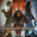

 Dragon's Dogma 2
Detalles
 |
|
| Tiempo de juego | No Jugado |
| Última actividad | Nunca |
| Añadido | 11/18/2024 16:59:33 |
| Modificado | 11/20/2024 17:50:29 |
| Estado de finalización | Not Played |
| Librería | Playnite |
| Fuente | 2TB DATOS |
| Plataforma | PC (Windows) |
| Fecha de lanzamiento | 3/21/2024 |
| Puntuación de la Comunidad | 59 |
| Puntuación de la Crítica | 88 |
| Puntuación de usuario | |
| Género | Acción Rol |
| Desarrollador | CAPCOM Co., Ltd. |
| Editor | CAPCOM Co., Ltd. |
| Característica | Cloud Saves Compat. Parcial Con Mando Cromos De HDR Disponible Logros De Préstamo Familiar Un Jugador |
| Enlaces | Punto de encuentro Discusiones Guías Noticias Página de la tienda PCGamingWiki Logros |
| Tag | 3D Acción Acción y aventura Aventura Dragones Espadas Fantasía Física Inteligencia artificial JcE Magia Medievales Mitos y leyendas Multijugador Mundo abierto Personalización de personajes Rol Rol de acción Tercera persona Un jugador |
Descripción
Nota: Este objeto también se incluye con otros sets.
¡Parte hacia tu gran aventura, Arisen!
Dragon’s Dogma es un juego de rol y acción basado en historia y para un jugador que te permite elegir tu propia experiencia: desde el aspecto de tu Arisen, a tu vocación, tu grupo, cómo afrontar las diferentes situaciones y mucho más. Ahora, en esta esperada secuela, el increíblemente detallado mundo de fantasía de Dragon’s Dogma 2 está aguardando a que lo explores.
En tu viaje, te acompañarán los peones, unos misteriosos seres de otro mundo, en una aventura tan especial que te sentirás como si otros jugadores se hubieran unido a tu misión.
Todo esto, llevado a otro nivel gracias a los modelos físicos, la inteligencia artificial (IA) y la última tecnología en gráficos, para que el mundo de fantasía de Dragon’s Dogma 2 sea verdaderamente inmersivo.
Acción que pone a prueba tu creatividad
Blande espadas y arcos, y usa magia.
Las vocaciones de Dragon's Dogma 2 te permiten elegir tu propio estilo de lucha.

Aliados en tu aventura para un jugador
Los jugadores pueden personalizar su peón principal, que estará siempre al lado de su Arisen,
y formar una alianza con hasta dos peones adicionales de otros jugadores de la red.

La lucha contra los monstruos de este mundo
Fuera de las ciudades te encontrarás con los diferentes monstruos que moran en estas tierras.
Deberás decidir entre librar batallas o buscar alternativas,
así que valora bien la composición de tu grupo, el terreno que te rodea y los monstruos a los que te enfrentas.

Habitantes de este mundo
Los viajeros, mercaderes, soldados y otras gentes llevan su vida cotidiana.
Guiados por sus propios objetivos y motivaciones, cada uno muestra emociones diferentes.
A veces, te descubrirán misiones acercándose a ti y pidiéndote un favor.

¡Parte hacia tu gran aventura, Arisen!
Dragon’s Dogma es un juego de rol y acción basado en historia y para un jugador que te permite elegir tu propia experiencia: desde el aspecto de tu Arisen, a tu vocación, tu grupo, cómo afrontar las diferentes situaciones y mucho más. Ahora, en esta esperada secuela, el increíblemente detallado mundo de fantasía de Dragon’s Dogma 2 está aguardando a que lo explores.
En tu viaje, te acompañarán los peones, unos misteriosos seres de otro mundo, en una aventura tan especial que te sentirás como si otros jugadores se hubieran unido a tu misión.
Todo esto, llevado a otro nivel gracias a los modelos físicos, la inteligencia artificial (IA) y la última tecnología en gráficos, para que el mundo de fantasía de Dragon’s Dogma 2 sea verdaderamente inmersivo.
Acción que pone a prueba tu creatividad
Blande espadas y arcos, y usa magia.
Las vocaciones de Dragon's Dogma 2 te permiten elegir tu propio estilo de lucha.
Aliados en tu aventura para un jugador
Los jugadores pueden personalizar su peón principal, que estará siempre al lado de su Arisen,
y formar una alianza con hasta dos peones adicionales de otros jugadores de la red.
La lucha contra los monstruos de este mundo
Fuera de las ciudades te encontrarás con los diferentes monstruos que moran en estas tierras.
Deberás decidir entre librar batallas o buscar alternativas,
así que valora bien la composición de tu grupo, el terreno que te rodea y los monstruos a los que te enfrentas.
Habitantes de este mundo
Los viajeros, mercaderes, soldados y otras gentes llevan su vida cotidiana.
Guiados por sus propios objetivos y motivaciones, cada uno muestra emociones diferentes.
A veces, te descubrirán misiones acercándose a ti y pidiéndote un favor.